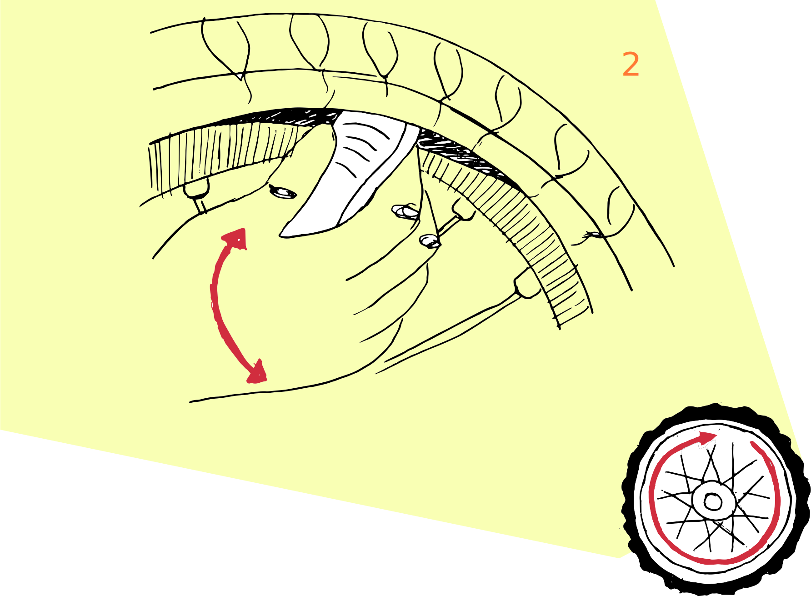

<!DOCTYPE html>
<html lang="es">
    <head>
        <meta charset="utf-8" />
        <meta name="viewport" content="width=device-width, initial-scale=1, shrink-to-fit=no" />
        <link href="https://cdn.jsdelivr.net/npm/bootstrap@5.0.0-beta1/dist/css/bootstrap.min.css" rel="stylesheet" integrity="sha384-giJF6kkoqNQ00vy+HMDP7azOuL0xtbfIcaT9wjKHr8RbDVddVHyTfAAsrekwKmP1" crossorigin="anonymous" />
        <title>CAMBIAR LA CÁMARA DE UNA BICICLETA NIVEL NOVATO/title>
        <link rel="preconnect" href="https://fonts.gstatic.com" />
        <link href="https://fonts.googleapis.com/css2?family=DM+Sans:ital@0;1&display=swap" rel="stylesheet" />
        <style>
            :root {
                --bs-font-sans-serif: "DM Sans", sans-serif;
            }
            :hover {
                transition: all ease 0.5s;
            }
            * {
                font-weight: 300;
            }
            header p {
                text-align: justify;
            }
            header p.lead {
                line-height: 1.6;
            }
            figure figcaption p {
                padding: 1rem;
            }
            @media (min-width: 762px) {
                figure:nth-child(odd) figcaption p {
                    border-right: 2px solid #ccc;
                    padding-left: 1rem;
                    text-align: right;
                    color: #777;
                }

                figure:nth-child(even) figcaption p {
                    border-left: 2px solid #ccc;
                    padding-right: 1rem;
                    text-align: left;
                    color: #777;
                }
            }
            footer a {
                color: var(--bs-gray);
                text-decoration: none;
            }
            footer a:hover {
                color: var(--bs-light);
            }
        </style>
    </head>
    <body>
        <header class="container">
            <div class="row py-5">
                <div class="col-12 col-sm-11 col-md-10 col-lg-9 col-xl-8 col-xxl-7 mx-auto">
                    <h1 class="mb-3 mt-5 text-center">Instructivo para novatos: Cambiar la cámara de tu bicicleta.</h1>

                    <h2 class="fs-6 mb-5 text-center text-uppercase">BY:Cecilia Soto H.</h2>

                    <p class="lead">
                        A continuación se  mostrara en simples pasos como cambiar la cámara de tu bicicleta desde 0, ideal para novatos, en caso de que se haya pinchado o rajado con algun objeto.
                    </p>

                    <p>
                        Para realizar este instructivo solo necesitaras una palanca, un bombín y seguir estos 6 simples pasos:
                    </p>
                </div>
            </div>
        </header>

        <main class="container-fluid bg-light">
            <div class="row py-5">
                <div class="col-11 mx-auto py-3">
                    <figure class="row d-flex align-items-center">
                        
                        <figcaption class="col-12 col-md-6">
                          <p>Como primer paso es necesario sacar la rueda para esto se necesita:</p>
                     <li type="circle">Bajar la cadena al primer piñón</li>
                      <li type="circle">Soltar el bloqueo</li>
                      <li type="circle">Aflojar el tornillo y liberar la rueda</li>

                        </figcaption>
                    </figure>

                    <figure class="row d-flex align-items-center">
                        
                        <figcaption class="col-12 col-md-6 order-md-1">
                            <p>A continuación con una palanca será necesario empezar a separar la cubierta de la cámara por toda la orilla interior de la rueda.</p>
                        </figcaption>
                    </figure>

                    <figure class="row d-flex align-items-center">
                        
                        <figcaption class="col-12 col-md-6">
                            <p>De esta manera se podrá proceder con el retiro de la cámara desde el interior de la rueda, ten cuidado con la válvula de aire al retirar la cámara, sepárala con cuidado del aro de la rueda.</p>
                        </figcaption>
                    </figure>

                    <figure class="row d-flex align-items-center">
                        
                        <figcaption class="col-12 col-md-6 order-md-1">
                            <p>Con ambas manos revisa la cubierta de la llanta, con el fin de encontrar el objeto que pincho la rueda y evitar que dañe la nueva cámara que se instalará.</p>
                        </figcaption>
                    </figure>

                    <figure class="row d-flex align-items-center">
                        
                        <figcaption class="col-12 col-md-6">
                            <p>Con un bombín conectado a la válvula de aire de la nueva cámara introduce un poco de aire y cierra el conducto, para luego proceder a instalar nuevamente la cámara entre la cubierta y el aro.</p>
                        </figcaption>
                    </figure>

                    <figure class="row d-flex align-items-center">
                        
                      <figcaption class="col-12 col-md-6 order-md-1">
                            <p>Finalmente acomoda la cubierta de la llanta y ya puedes terminar de inflar la rueda.</p>
                        </figcaption>
                    </figure>

                </div>
            </div>
        </main>

        <footer class="container-fluid bg-dark text-white-50">
            <div class="row py-3">
                <div class="col-12">
                    <p class="d-flex justify-content-between small p-1 m-0">
                        <!--reemplaza el # que sigue con la URL de tu cuenta en GitHub-->
                        <a href="https://github.com/cecysoto">Cecilia Soto H.</a>
                        <a href="https://github.com/profesorfaco/dno075-2021-1/">Infografía Digital v2</a>
                        <a href="https://github.com/profesorfaco/dno075-2021-1/tree/main/clase-06" class="d-none d-lg-inline">Lunes 19 de abril, 2021</a>
                    </p>
                </div>
            </div>
        </footer>
    </body>
</html>
